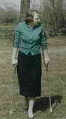
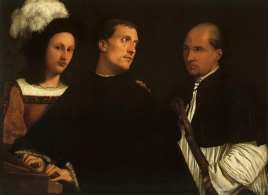

1570, Salamanca. Llega Teresa de Jesús (55 años) fundando conventos de descalzas. Les han cedido una casita vieja y destartalada, antes ocupada por unos inquilinos estudiantes que la desalojan de mala gana y con malos modos.
Es día de Todos los Santos, víspera del Día de los Difuntos. Teresa se instala, de manera muy precaria, con otra monja.
Lo cuenta en sus "Fundaciones", con su gracia y buena compostura y elegancia desafeitada (Fray Luis de Leon dixit):
-
... Quedamos la noche de Todos Santos mi compañera y
yo solas. Yo os digo, hermanas, que cuando se me acuerda el
miedo de mi compañera, que era María del Sacramento, una monja
de más edad que yo, y harto sierva de Dios, que me da gana de
reír.
La casa era muy grande y desbaratada y con muchos desvanes, y mi compañera no había quitársele del pensamiento los estudiantes, pareciéndole que como se habían enojado tanto de que salieron de la casa, que alguno se había escondido en ella; ellos lo pudieran muy bien hacer, según había adónde.
Encerrámonos en una pieza adonde estaba paja, que era lo primero que yo proveía para fundar la casa, porque teniéndola no nos faltaba cama; en ello dormimos esa noche con unas dos mantas que nos prestaron. [...]
Como mi compañera se vio cerrada en aquella pieza, parece sosegó algo cuanto a lo de los estudiantes, aunque no hacía sino mirar a una parte y a otra, todavía con temores, y el demonio que la debía ayudar con representarla pensamientos de peligro para turbarme a mí, que con la flaqueza de corazón que tengo, poco me solía bastar.
Yo la dije que qué miraba, que cómo allí no podía entrar nadie. Díjome: «Madre, estoy pensando, si ahora me muriese yo aquí, ¿qué haríais vos sola?».
Aquello, si fuera, me parecía recia cosa; y comencé a pensar un poco en ello, y aun haber miedo; porque siempre los cuerpos muertos, aunque yo no le he, me enflaquecen el corazón, aunque no esté sola. Y como el doblar de las campanas ayudaba, que -como he dicho- era noche de las Animas, buen principio llevaba el demonio para hacernos perder el pensamiento con niñerías; cuando entiende que de él no se ha miedo, busca otros rodeos.
Yo la dije: «Hermana, de que eso sea, pensaré lo que he de hacer; ahora déjeme dormir».
Como habíamos tenido dos noches malas, presto quitó el sueño los miedos...
Imaginemos, en la redacción de Clarín, anoche:
— ... A ver qué tenemos para mañana? Una violación, bien.... y tres casos de pedofilia ! Excelente! Tenemos la atención del público asegurada, che.... Y habrá alguna cosita de fútbol y de tv para condimentar, no ? Perfecto. Y te apuesto a que las noticias más visitadas... ah, ya no me aceptás esas apuestas ! Claro, claro... antes de que pusiéramos lo de las noticias más leídas en la página web, me decías que yo era un cínico y que tenía una mirada negra sobre la naturaleza humana, y que la gente "normal" no es "morbosa" y que... je...
Gacetilla:
-
Este sábado 22 de noviembre, seguimos con el ciclo Bresson en el Taller de cine y pensamiento que funciona en Gomez resto bar, Pasaje San Lorenzo 365 (San Telmo, ciudad de Buenos Aires).
Este sábado exhibiremos: DIARIO DE UN CURA RURAL la memorable película basada en una novela homónima de G. Bernanos.
Sabado 22, 18:30 hs.
Coordinan el debate: Oscar Cuervo y Esteban del Valle
Contribución: $ 2.-
Via Minute Particulars, y a propósito de algunos ataques dirigidos hace poco contra la Madre Teresa de Calcuta (de Christopher Hitchens sobre todo, aunque en todos lados se cuecen habas), me entero de la existencia de esta notable carta abierta [en inglés] de Robert Luis Stevenson (sí, el de "La Isla del Tesoro") defendiendo -frente a algún ataque de parecida calidad- al famoso padre Damien (o Damian) de Molokai, recientemente beato.
Y advierto ahora, buscando, que su cuento El diablo de la botella (que casualmente cité al pasar un año atrás) menciona a los leprosos de Molokai.
En los blogs de estos días (y de mi ambiente) ha habido mucho material y discusión sobre roles masculinos y femenino, sobre la supuesta feminización -o des-masculinización- de la iglesia, sobre formas de sexismo y otros ismos, sobre lenguaje inclusivista y neutro, etc. Después acaso vendrá un racconto más detallado y alguna opinión...
Pero no quiero dejar para más adelante, algo de la misa de ayer. Se recordaba a Santa Isabel de Hungría, y la primera lectura del libro de los Macabeos se refería a aquella madre de los siete hermanos martirizados. Apoyándose en esas dos presencias femeninas, el cura empezó el sermón con un defensivo (y no del todo serio) "Para que no digan que somos machistas...". Algo que no dejará muy conforme a los inconformistas, sin dudas.
Al menos, por ahora zafamos -casi siempre- del lenguaje inclusivista en las traducciones. Dicen que algunos llegan a cambiar la invocación trinitaria "En el nombre del Padre, del Hijo y del Espíritu Santo", por "el Creador, el Redentor y el Santificador", porque así no tiene connotación sexista (eso en EEUU; lástima que en castellano estas palabras tienen género masculino, los paranoicos de acá tendrán que pensar algo mejor).
Por ejemplo:
-
23. Pues así
-
21. Animaba a cada uno de ellos en su lenguaje patrio y, llena de generosos sentimientos y estimulando con ardor varonil sus reflexiones de mujer, les decía...
Amor y denuncia:
-
... empezó el recital en el que Arjona presentó su séptimo trabajo, "Santo pecado" e interpretó sus hits, como Tu reputación—tema con el que se prendieron los primeros encendedores— y Taxi ...
... Con imágenes de aborígenes, de hambre, de muerte, entonó los versos:
"Y si la deuda externa/ nos robó la primavera/ al diablo la geografía/ se acabaron las fronteras", de "Si el Norte fuera el Sur".
Porque sus temas alternan el amor y la denuncia —su planteo es resistir desde la canción—
...alto precio de las entradas que osciló entre los 40 y los 180 pesos..
"La mejor venganza para esta crisis es pasársela bien"...
... habrá pasado Santo Pecado tour por la Argentina. "Hasta la próxima, hermanos", se despedirá, como lo hizo el martes ante las fans desbordadas...

Por varios motivos —pero sobre todo por las citas que viene copiando TSO en Video Meliora— estoy sospechando que debería dedicarme a conocer a Flannery O'Connor. Parece una de esas almas amigas...
Lástima que en mi mundo hispano es casi desconocida, por lo que veo.
Busquemos, busquemos ...
Acá hay una brevísima reseña. Otra página. Algo más para morder hay en este artículo de Luis Fernando Figari. Y algunos comentarios a propósito de "El negro artificial" uno de sus pocos libros editados en español... y no mucho más.
Alguien conoce algo más, sea para recomendar o desrecomendar ?
A pesar de todo... a pesar del material, digamos (pero al fin y al cabo, y salvando las distancias, a veces también Velásquez y Goya tuvieron que trabajar con materia poco digna...)... está bueno el dibujito de Sabat en La Nación de hoy.
PS: Un lector -un cura con berretines plásticos [*]- me advierte/corrige: la caricatura de La Nación es de Alfredo Sábat. Pero cuando uno se refiere, hoy y aquí, al "dibujante Sábat" -a secas- se supone que se trata de Hermenegildo, padre del anterior, artista de mucho mayor renombre y vuelo -y que suele dibujar en Clarín.
[*] ... que no es lo mismo que un cura con berretines de plástico, no confundamos.
En El huevo de chocolate, entre otro material dedicado al "folklore infantil", hay una sección de retaílas que se usan (se usaban?) para sortear "el que sale" en un juego: "los niños se colocan formando un corro y todos los niños o sólo uno entona una cantinela mientras va señalando por orden a todos los niños participantes. El último niño señalado es, según lo convenido previamente, el que se libra o el que se queda. ".
Yo recuerdo uno, tal vez aprendido de mis primas de Villa Mercedes (San Luis), que decía algo así como:
-
A pe-tén sen-vén
tucumán ler-chí
a ma-má sur-quí
buri-buri car-ché !
Seis relatos de Papini.
-
...Y ahora, desde hace más de un año, estoy aquí en la ciudad que me vio nacer y de la que me marché todavía joven para enterrarme hasta la vejez.
Todo lo que veo me cansa; no reconozco muchas cosas; otras son completamente nuevas para mí.
Me parece que amo a los hombres como un niño ama a la madre que ha vuelto a encontrar y, sin embargo, nadie me quiere a su lado.
Mi aspecto singular, mi ignorancia de la vida presente, la torpeza inexplicable de mis movimientos, la lentitud de mis ideas, la imposibilidad de encontrar a esta edad nuevos amigos me hace vivir solo en medio de millones de hombres, como en mi torre.
He intentado, alguna vez, parar en la calle a algún joven para contarle mi historia, pero todos sienten repugnancia hacia mí y me juzgan un enfermo fastidioso salido de repente de lo desconocido.
Mi casa ha sido destruida para hacer sitio a una calle más ancha; mi nombre ha desaparecido de los registros de la ciudad y de la memoria de los hombres. Ya no soy nada para los demás y casi nada para mí.
Desde que he vuelto entre los demás, no puedo respirar bien, mi pecho está oprimido por un aire pesado; todo lo que me rodea parece lleno de polvo.
No consigo apasionarme, y recuerdo únicamente, casi con deseos, los balidos desgarrados y tristes de las ovejas lejanas. ...
-
... cuando volví después a su casa me dijo:
—Sabes quién es el más grande de los músicos?
—Pues, no... —le contesté—. Quizás Beethoven...
—No —me dijo ella—. Ven a escucharlo.
Había conseguido algunos discos de Monteverdi; madrigales; y me los puso.
Protesté, diciendo que sí, que me gustaba mucho Monteverdi, pero no más que Beethoven.
A ella Beethoven le empezaba a gustar menos que en su juventud. En los tiempos antes de la guerra, parecía preferir a Monteverdi, Bach, Mozart, el canto gregoriano.
Desconfiaba cada vez más de la fuerza, incluso en el arte.
Muchas veces discutimos respecto de Wagner. Me decía que después de haber escuchado a Wagner tenía la impresión de haber recibido una serie de bastonazos.
También en las artes plásticas, sus gustos parecían haber evolucionado de manera semejante. Siempre le había gustado Miguel Angel, pero después le llegaron a gustar tanto, o más, pintores como Giotto, Masaccio, Leonardo, Giorgione.
Cada vez prefería más la pureza a la fuerza.
 La aludida es Simone Weil.
Y la que escribe es Simone Petrement, en la biografía que hizo de su compañera de estudios y amiga.
El cuadro al costado es el "Concerto", galería Pitti, que algunos atribuyen a Giorgione y otros a Tiziano. Y que gustó mucho a Simone cuando lo conoció: "uno de los tres recuerdos verdaderamente intensos que guardaré de los museos de pintura italianos"; (de paso, ella calificaba de idiotas a los que se inclinaban por la atribución tizanesca,no sé muy bien por qué).
- "...
Yo trato de tener un pensamiento equilibrado entre lo que piensa la derecha, que dice que pobres hubo siempre y tiene que haber, y lo que dice la izquierda, que hay que hacer la revolución y redistribuir la renta. Entre un pensamiento de hijos de puta y otro de románticos que en realidad no cambian nada, yo creo en una política activa de Estado..."
Ginés González García, ministro de salud de Argentina
A la hora del Mercado sigue la hora del Estado, y así sucesivamente (sobre todo en la Argentina); como esclavos dóciles que se contentan con cambiar de dueño de tanto en tanto.
- ...quien no conoce el rostro de Dios por medio de la contemplación, no lo podrá reconocer en la acción, aunque se le ilumine en el rostro de los humillados y oprimidos. Incluso la celebración de la eucaristía es anamnesis y, por tanto, contemplación en amor y comunión de amor con amor; y sólo a partir de ella puede entrar el ite missa-missio est
en el mundo. Entonces sí es posible el «orad sin cesar» de que habla Pablo (1 Tes 5, 17) dentro de la acción, pero no principalmente en razón de un ejercicio técnico al modo de oración oriental de Jesús, sino del mismo modo -que un muchacho lleva siempre presente y viva en su corazón la imagen de la amada, aun en medio de las ocupaciones más ajenas, o del mismo modo que los caballeros de los antiguos romances realizaban sus heroicidades para gloria de su dama.
La «buena voluntad» es una expresión dulcificada de algo mucho más fuerte, que en palabras cristianas diría: ser en todo «alabanza de la gloria de su gracia» (Ef 1, 6) a fin de que «Dios sea glorificado en todo (Benito), de que todo ocurra «a mayor gloria de Dios» (Ignacio de Loyola).
Esta glorificación ocurre en tanto que, como acción humana, se inspira en el amor y tiende al amor. Al igual que la materia es aprehendida e informada en toda su extensión por la vida, así también el «material» natural vivo y psíquico, preformado por la virtud natural, es informado definitivamente por la virtud del amor (caritas forma virtutum, como fundamento de toda ética cristiana, tanto de cuño agustiniano como tomista). Cáritas es todo encuentro con el prójimo que -visto con los ojos judiciales de Dios- puede ser interpretado como encuentro en el amor absoluto, es decir, en el amor divino, tal y como se ha hecho público en Cristo.
Se trata, pues, de una interpretación, es decir, de un hacer visible a la luz del juego del juicio todos los presupuestos o consecuencias implícitas en el encuentro humano, a fin de lograr una interpretación absolutamente objetiva, tal y como se muestra en el veredicto del juicio: «En verdad os digo, cuanto (no) hicisteis (las obras de amor) con uno de estos mis hermanos más pequeñuelos, conmigo (no) lo hicisteis» (Mt 25, 45). Este veredicto despierta un gran asombro tanto en quienes las han hecho como en quienes no las han hecho («Señor, ¿cuándo te vimos hambriento o sediento, o peregrino, o desnudo, o enfermo o en prisión?») debido a que nadie, a no ser Cristo, logra la total reducción de sus obras a Cristo, ni comprende plenamente que, en la fe amorosa, la medida de lo ético está en el amor de Dios...
Urs von Balthasar